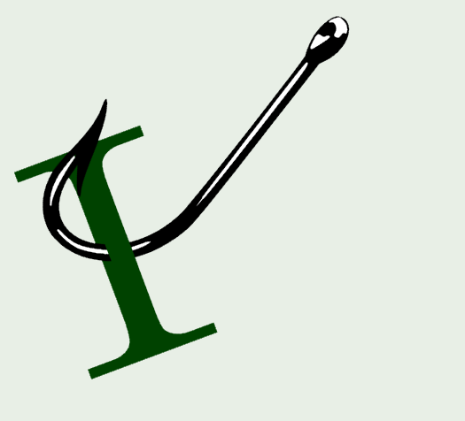

Security
Git security vulnerabilities announced by The GitHub Blog
Software Architecture
Stale Data Is More Than an Eventual Consistency Problem by Derek Comartin
GitHib
GitHub availability report: October 2026 by The GitHub Blog
How to deliver real data sovereignty by Mary Branscombe
.NET
EF 11 Split Query Performance: The Redundant Reference Join Is Gone, Measured on PostgreSQL by Milan Jovanović
Critter Stack on .NET 11 and a Stoat Demo (video) by JasperFx Software
European Law for .NET Developers: Your Apps with the European Accessibility Act by Lou Creemers
Brian Hitney on Fabric Apps [EPISODE 923] (video) by Technology and Friends
Tiles and Tokens - Part 5: EF Core 11: Querying Deeply Nested Game State Without Schema Friction (video) by NimblePros
C# 15 Labeled Break Continue by NDepend
C# 15 Closed Hierarchies by NDepend
Where Did My Order Go? Tracing One Request Across Services | CritterWatch in Practice #2 (video) by JasperFx Software
When Messages Die: Dead Letter Triage with AI | CritterWatch in Practice #1 (video) by JasperFx Software
Async Validation in ASP.NET Core 11 by NimblePros
Recap from World Usability Day 2026 by Sarah Dutkiewicz
What I think so far about Spec Driven Development by Jeremy D. Miller
Bring Your Own Model is now generally available in Visual Studio by Visual Studio Blog
Tiles and Tokens - Part 4: Saving the Game: System.Text.Json and Union State (video) by NimblePros
File-Based Apps in .NET 11: Room to Grow by Barret Blake
Adopt .NET 11 Without Surprises: Build a Canary Pipeline by Mitchel Sellers
Tiles and Tokens - Part 1: Rolling Into .NET 11: Modeling a Board Game with C# 15 (video) by NimblePros
Tiles and Tokens - Part 3: Closed Hierarchies in C# 15: Every Victory Condition Accounted For (video) by NimblePros
Announcing Visual Studio 2026 LTSC 18.11 by Visual Studio Blog
Announcing .NET 11 by .NET Team
.NET and .NET Framework November 2026 servicing updates by .NET Team
EF Core 11 Part II: Faster Queries and SQL Server Upgrades by NimblePros
Copilot in Visual Studio Just Got a Major Upgrade by Visual Studio Blog
On EventStorming, collaboration, LLMs and how to glue that by Oskar Dudycz
Tiles and Tokens - Part 2: Discriminated Unions in C# 15: A Turn is Exactly One Thing (video) by NimblePros
Speed up CI builds with Meziantou.DeltaBuild by Gérald Barré
Long Running Workflows and Saga Improvements for Wolverine and CritterWatch (video) by JasperFx Software
Fix package vulnerabilities with GitHub Copilot (video) by Microsoft Visual Studio
Software Development
Building Kakuro Zone by Cassidy Williams
Veterans Day 2026 - About Vets Who Code by Sarah Dutkiewicz
QuickCheck property: Forced category limit applies by Mark Seemann
AI
Build once, run on any agent: A practical guide to agent skills by The GitHub Blog
The RockBot Ecosystem by Rockford Lhotka
Community
The Shy Kid Who Did Not Speak by Chris Woody Woodruff
comments powered by Disqus